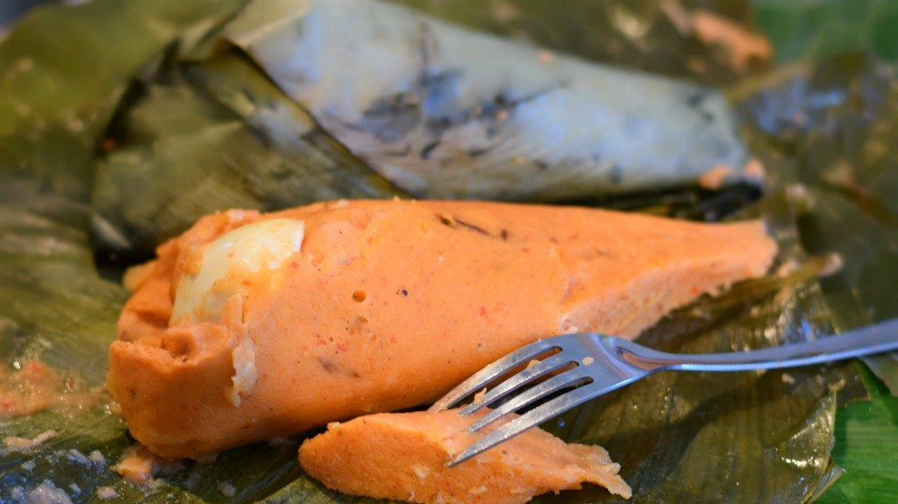

Moin-Moin

Description
Moin-Moin is a steamed or boiled bean pudding made from washed and peeled
black-eyed beans, combined with onions, eggs and fresh ground red peppers.
It's a food that is a staple in Nigeria
Ingredients
- Beans
- onions
- Fresh pepper
- Tomato puree
- Groudnut oil
- water
- Corned beef
- Eggs
- Wrapping leaves
Steps
- Soak the beans in cold water and remove the skin
- Grind the skinned beans, fresh pepper and onions together.
-
Pour it into a moving bowl and mix well with a wooden spoon until light
and creamy.
-
Add tomato puree and mix well again, and add warm oil, the corned beef
and diced eggs.
-
Place about 3/4 spoonfuls of the mixture into the wrapping leaves and
wrap firmly.
-
Arrange into saucepan containing bed of leaves, add water and stream for
an hour.
Home page